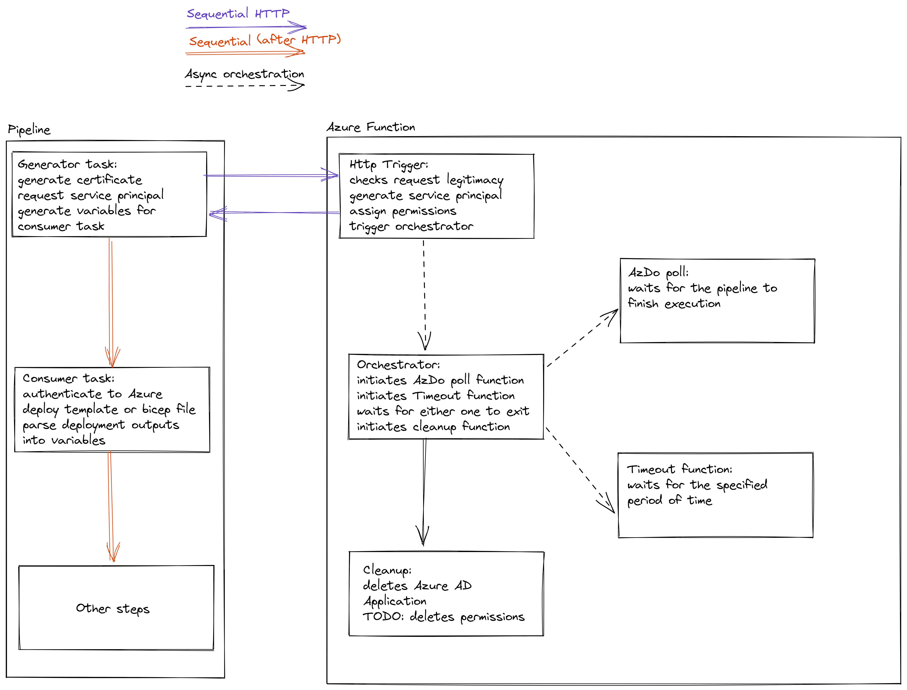

# JiT service principals ## for ci\cd pipelines ----- ### Current situation - ~100 service principals currently in use - accounts can not be linked to owners - account names are not following the same naming scheme - service principal names are meaningless guids - service principals cant easily be linked to service connections - not following "least security principle" - no review process (hard to implement one) ----- ### Risks with maintaining existing solution --- #### Scaling issues it will get progressively harder to maintain existing solution as we scale as the process is 100% manual --- #### Miss usage and permission sprawl right now there 12 different service connections role assignments on production subscription --- #### Extensive attack surface each service principal carries a risk of being compromised. potentially even a dev one can have access to production subscriptions ----- ### Proposed solution Just-in-Time service principals generated during the build and destroyed right after the build finishes ----- ### Benefits of JiT approach - fully automated approach that can scale almost indefinitely - short-lived service principals with certificate authentication - follows "least security principle" - pipeline permissions are easily auditable - virtually no attack surface and no permission sprawl - merge multiple common tasks into one (arm, bicep, export variables, etc) - relatively easy migration path ----- ### Architecture  ### TODO ----- ### Downsides - needs migration (effort from developers and infrastructure team) - needs development time from infrastructure team - introduces external dependencies to pipelines - still possible to use maliciously (can somewhat be mitigated in code)